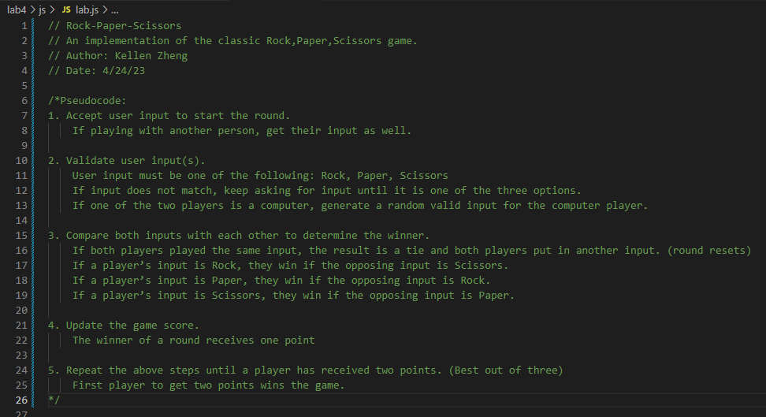

Lab 4 - Pseudocoding and Problem-solving
Challenge
This lab challenged our ability to create outlines to solve problems. By writing pseudocode, we were tasked with detailing a step by step plan to tackle a problem.
Problems
I didn't really encounter any issues since this was mainly just pseudocode in planning the actual code.
Reflection
I think this assignment went pretty well and as someone with beginner level programming experience, I was reminded of pseudocode's importance. I had learned how to program starting with pseudocode and this was a nice refresher / callback to when I first started learning how to code.
Results
Pseudocode for "How to make Fried Tofu":
1. Get ingredients:
-Firm Tofu
-Frying Oil (neutral flavor preferred)
-Corn or Potato Starch (Flour may be an alternative)
-Sauces and seasoning for flavor
-Toppings (such as cut spring onions)
2. Prepare Tofu
-Place tofu on a clean solid surface
-Put a heavy weighed object on tofu to press it for around 30 min (extracts moisture)
-Cut tofu into small cubes
-Optional: Marinate the cut dried tofu with sauces if you wish to give it more flavor
3. Fry Tofu
-Coat in starch or flour, while also adding any seasoning you wish to add for flavor
-Fry tofu in oil at around 360 °F to 370 °F for 3-4 min or until golden brown
4. Plate and Enjoy
-Place tofu onto a bowl or plate to cool down
-Optional: add sauces and toppings to give more flavor
-Enjoy
Pseudocode for Rock, Paper, Scissors:
